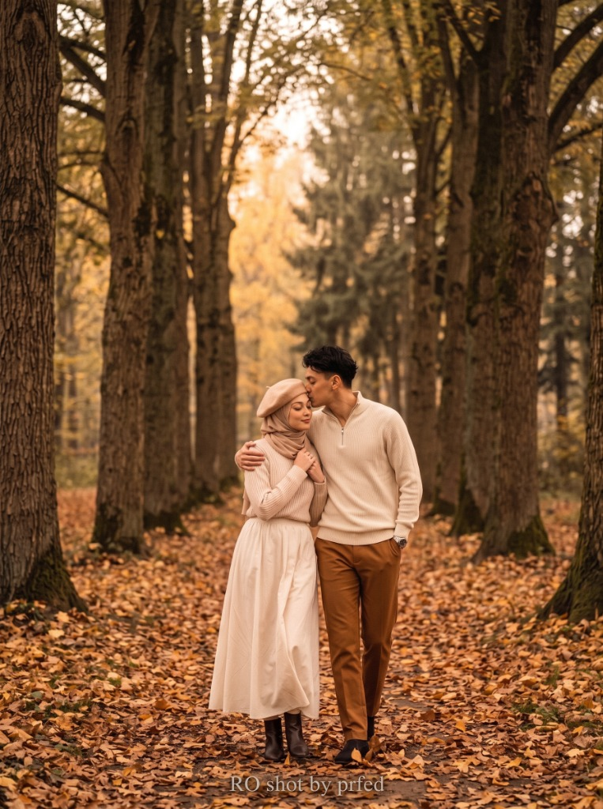
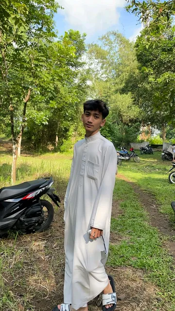
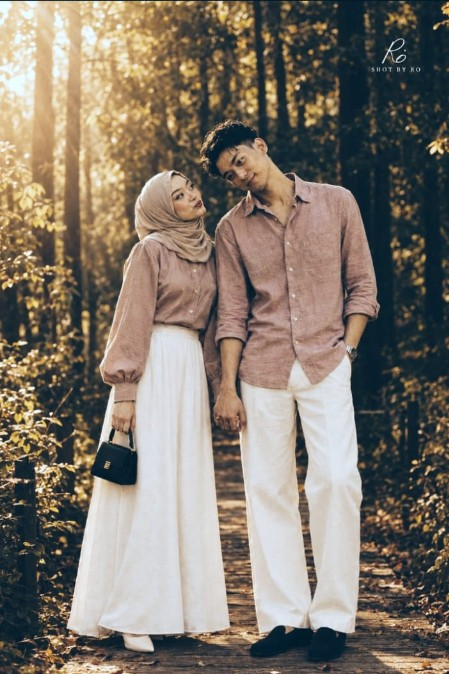
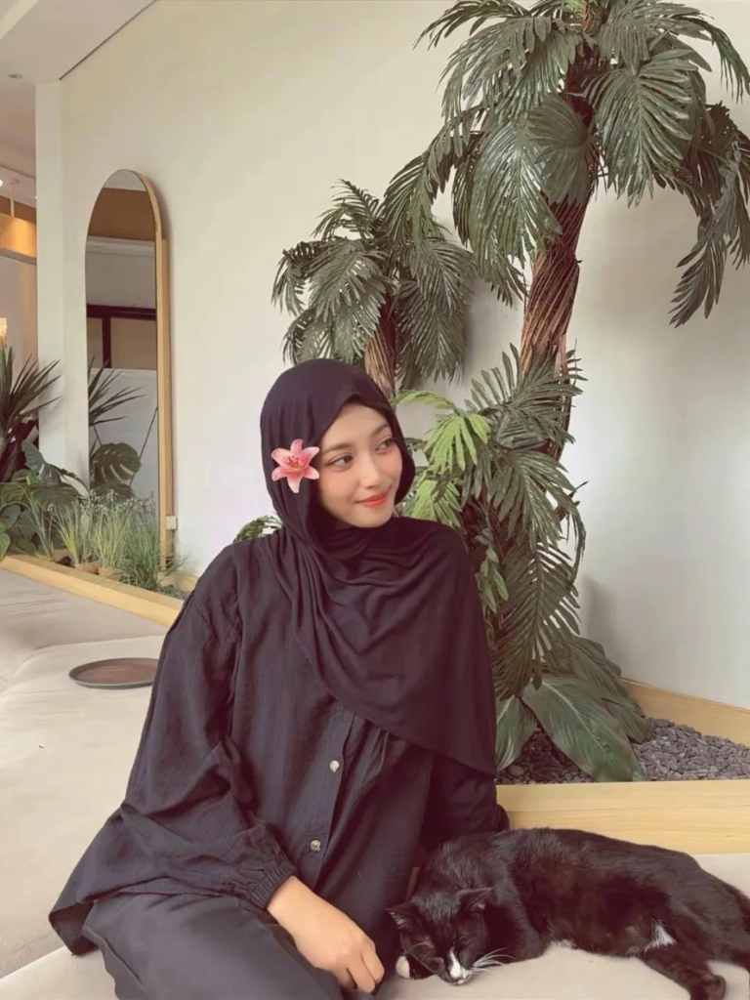
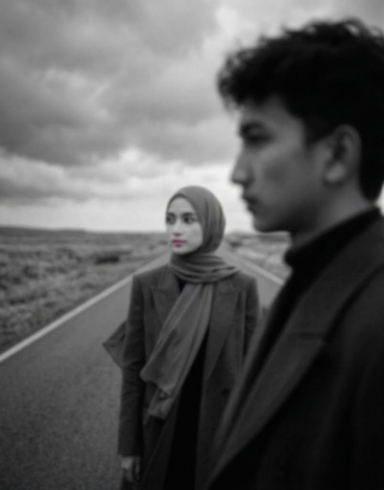
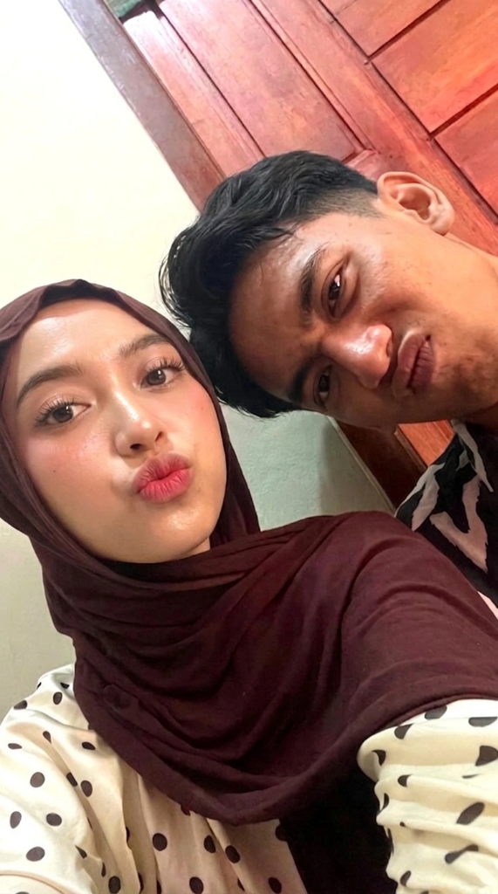

"Writing our story together, every single day since 20 September 2026"
Dua manusia dengan kepribadian berbeda, yang dipersatukan oleh secangkir kopi hangat, canda tawa larut malam, dan komitmen untuk saling melengkapi.

Pecinta kopi manual brew, pendengar setia cerita random Nicky, dan navigator andalan tiap kali jalan bareng.
"Waktu nemenin Nicky nyari spot foto kecil pas sore hari, ketawa bareng liat hasil foto candid yang lucu dan manis."

"Dalam jutaan orang di bumi, menemukanmu terasa seperti akhirnya pulang ke rumah."

Pengamat langit sore, tukang dokumentasi momen candid, dan paling jago milih kafe bernuansa tenang.
"Araf yang selalu salting tiap dipandang lama-lama, tapi selalu perhatian dan gak pernah lupa bawain camilan favorit."
"In all the world, there is no heart for me like yours. In all the world, there is no love for you like mine."
"Until I Found You"
Stephen Sanchez"I would never fall in love until I found her... I said, 'I would never fall unless it's you I fall into'."
Kumpulan memori kecil yang membuat hari-hari biasa kita menjadi cerita paling istimewa.
Jam Istirahat Siang & Obrolan Kopi
Berawal dari lelahnya deadline dan tugas kantor magang, sampai akhirnya kita janjian buat makan siang bareng pas jam istirahat. Niat awal cuma makan siang dan ngopi sebentar pelepas penat, ternyata obrolannya begitu nyambung dan bikin lupa waktu. Dari rekan magang yang saling lirik malu-malu di kantor, jadi awal mula kisah paling indah.
Kintamani & Ubud, Bali
Bangun jam 5 pagi demi melihat kabut di Danau Batur, jalan santai di tepi sawah, dan menikmati semilir angin dingin sambil menggenggam tangan satu sama lain.
RamenYA! Plaza Asia Tasikmalaya
Obat paling ampuh saat salah satu dari kita lagi butuh comfort food: semangkuk ramen hangat kuah gurih di RamenYA!, obrolan santai berdua, dan suasana hangat yang selalu bikin kita lupa lelah.
Tol Dalam Kota & Jalanan Sepi
Menyetel lagu kenangan berdua di mobil dengan volume kencang, bernyanyi bersama sambil menikmati gemerlap lampu kota tengah malam yang tenang dan syahdu.
Di mana saja kita berada
Debat sengit soal hal sepele seperti 'apakah bubur diaduk itu kriminal', sampai lomba tiru suara kucing di lorong supermarket yang bikin kita malu sendiri.
Kyoto pas Autumn & Rumah Kecil Kita
Menyaksikan daun maple berguguran di Jepang bersama, mendekorasi ruang baca rumah impian, dan terus menjadi sahabat terbaik satu sama lain seumur hidup.
Setiap jepretan menyimpan debar jantung dan kebahagiaan yang tidak akan pernah pudar oleh waktu.

Walking Hand in Hand
Araf • 2026
Pure Happiness
Nicky • ForeverBY ARAF & NICKY • 2026